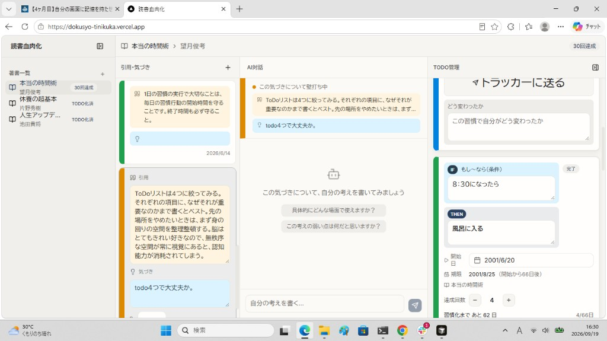

この図解で伝えたい「なるほど」
読んだ内容をメモで終わらせず、
AI壁打ち → IF-THEN → 日次レビュー まで一本につないだ。
↓
① ツールの画面
左から右へ進むと、気づきが行動になり、毎日のチェックにつながる

実際の画面（4ペイン）。左の「引用・気づき」を選ぶと、中央でAIが壁打ちを始め、結論を右のTODOへ送れる。
左端
本一覧
読んでいる本・TODO化済みの本を一覧で管理
2列目
引用・気づき
引用文と自分の気づきをカードで残す
中央｜AIの出番
AI対話
答え出しではなく、気づきの壁打ち役
右端
TODO管理
IF（条件）→ THEN（行動）と達成回数
↓
② 保持できるようにしたデータ
本・気づき・壁打ち・TODOに加え、日次レビューとカレンダーまでつなぐ
本
タイトル・著者・目的・評価・読書期間・コメント・ステータス
AI対話
役割（user / assistant）・本文（壁打ちの履歴）
TODO（IF-THEN）
IF・THEN・開始日・期限・達成回数・実践メモ・完了
日次レビュー連携
確定した IF-THEN を共通スプシへ追加し、毎日の習慣チェックに乗せる
カレンダー連携
習慣化（66日）向けの繰り返し予定
スプシのタブ：本
引用・気づき
AI対話
TODO
↓
③ 保存先と、それを選んだ理由
Googleスプレッドシート（既存の日次レビューと同じ／共通のスプシ）
既存の日次レビューとつなぎたい
TODOが追加され、毎日の習慣チェックの流れに乗る
保存先
Googleスプレッドシート
すでに使っている日次レビューと共通の1冊
→
こうなる
読書のTODOが、毎日の習慣に乗る
新しいツールで終わらず、既存のルーティンに合流する
↓
④ 工夫したポイント / 苦戦したポイント
AIは答えを出す役ではなく、気づきを行動に変える壁打ち役にした
工夫したこと
- TODOをただのタスクにせず、IF-THENの形にした
- AI活用：答え出しではなく、気づきの壁打ち役。結論をTODOに送る
- 日次レビューでも使えるよう共通スプレッドシートにし、TODOが追加されるようにした
苦戦したこと
- 微修正にかなり時間がかかった
- レイアウト調整
- TODO連携のつなぎ込み
AIの出番（画面中央の「AI対話」だけ）
引用・気づきを選ぶ → AIと壁打ち → 結論を IF-THEN の TODO にして右へ送る。
本の記録そのものや、日次レビュー保存の本体処理はAIの仕事ではない。
AIは「気づき → 行動（TODO）」の橋渡し役。
気づき
→
AI壁打ち
→
IF-THEN
→
日次レビュー
↓ 受けて、仲間がやること
✅ 仲間がやること
「メモした満足」で止めず、毎日やる行動まで一本につなぐ
🎯
気づき → 壁打ち → IF-THEN → 既存の日次チェック、の順で設計する
新しい保存場所を増やさず、すでに続いている日次レビューに合流させると、ツールが「作って終わり」になりにくい。
AIは答えを書く人ではなく、自分の言葉で行動条件を固める壁打ち相手にするとよい。
🎯 ひと言まとめ
記録で終わらせず、毎日の行動まで設計した。
本の気づきを、AI壁打ち → IF-THEN → 日次レビューへ。
保存先は既存の日次レビューと同じスプレッドシート。
「既存の日次レビューとつなぎたい」が、設計の起点。